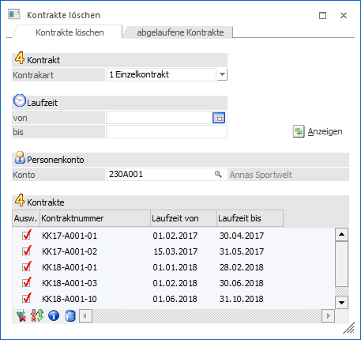
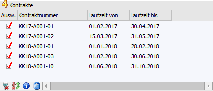
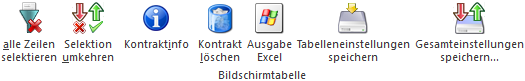
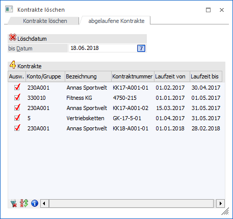
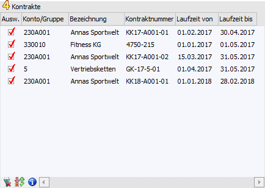
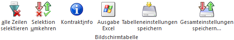

Grundsätzlich bleiben die Kontrakte auch nach Erreichung des Kontrakten im System erhalten. Diese Organisation ermöglicht es, erledigte Kontrakte als Grundlage für neue Vereinbarungen zu verwenden bzw. erledigte Kontrakte nachträglich auszuwerten. Wird ein Kontrakt nicht mehr benötigt, kann er im Programm…
1 WinLine FAKT
1 Erfassen
1 Kontraktverwaltung
1 Kontrakte löschen
… entfernt werden. Neben Kontrakten deren Gültigkeiten abgelaufen sind können auch Kontrakte gelöscht werden, die grundsätzlich noch gültig sind. Das Programm unterteilt sich dabei in die folgenden Register
ü Register "Kontrakte löschen"
In
diesem Register können gültige und abgelaufene Kontrakte eines Personenkontos
bzw. einer Gruppe gelöscht werden.
ü Register "abgelaufene
Kontrakte"
In diesem Register können abgelaufene Kontrakte gelöscht
werden.
Hinweis
Bei dem Löschen werden die Kontrakte aus den Belegtabellen gelöscht und die Einträge aus der Preistabelle entfernt.
Register "Kontrakte löschen"

Im Register "Kontrakte löschen" können gültige und abgelaufene Kontrakte eines Personenkontos bzw. einer Gruppe gelöscht werden.
Ø Kontraktart
Mit Hilfe einer Auswahlliste kann definiert werden, welche Kontraktart (1 - Einzelkontrakt / 2 - Gruppenkontrakt) bearbeitet werden soll.
Ø Laufzeit
Hier kann eine Selektion aufgrund der Laufzeit des Kontrakts erfolgen.
Ø Personenkonto bzw. Kunden- / Lieferantengruppe von / bis
Gemäß der Einstellung "Kontraktart" kann an dieser Stelle eine Eingrenzung auf das Personenkonto bzw. die Gruppe erfolgen, für welche(s) Kontrakte gelöscht werden sollen. Durch Bestätigung des Kontos bzw. der Gruppe wird die Tabelle "Kontrakte" automatisch gefüllt.
Ø Anzeigen
Durch Anwahl des Buttons "Anzeigen" wird die Tabelle "Kontrakte" gemäß der zuvor getätigten Selektion gefüllt.
Tabelle "Kontrakte"

In der Tabelle werden alle Kontrakte gemäß der zuvor getätigten Selektion dargestellt. Mit Hilfe der Option "Ausw." kann definiert werden, welche Kontrakte bei Anwahl des Buttons "Löschen" gelöscht werden sollen.
Tabellenbuttons

Ø alle Zeilen selektieren
Beim Drücken dieses Buttons werden alle Zeilen der Tabelle selektiert.
Ø Selektion umkehren
Durch Anklicken des Buttons "Selektion umkehren" wird die Option "Ausw." bei allen Kontrakten in das Gegenteil gekehrt.
Ø Kontraktinfo
Mit Hilfe des Tabellenbuttons "Kontraktinfo" wird der in der Tabelle gewählte Kontrakt am Bildschirm angezeigt.
Ø Kontrakt löschen
Durch Anwahl dieses Buttons wird der markierte Kontrakt (nach einer vorherigen Sicherheitsabfrage) gelöscht.
Ø Ausgabe Excel
Durch Anwahl des Buttons "Ausgabe Excel" wird der Inhalt der Tabelle an Microsoft Excel übergeben.
Ø Tabelleneinstellungen speichern
Die Spalten einer Tabelle können grundsätzlich an beliebige Positionen verschoben, bzw. in der Breite entsprechend angepasst werden. Durch Anwahl des Buttons "Tabelleneinstellungen speichern" werden die Einstellungen benutzerspezifisch gespeichert und bei dem nächsten Aufruf des Programmpunktes wieder vorgeschlagen.
Ø Gesamteinstellungen speichern
Im Gegensatz zu "Tabelleneinstellungen speichern" können mit "Gesamteinstellungen speichern" mehrere Tabellenaufbauten gespeichert und nach Wunsch geladen werden. Zusätzlich werden Sonderfunktionen der Tabelle (z.B. "Spalte gruppieren") ebenfalls bei der Speicherung bedacht.
Register "abgelaufene Kontrakte"

Im Register "abgelaufene Kontrakte" können Kontrakte gelöscht werden, deren Gültigkeitsdatum jenseits des Löschdatums liegt. Hierbei ist es irrelevant, ob die Kontraktmenge erreicht wurde oder nicht.
Ø Löschdatum - bis Datum
In diesem Feld muss jenes Datum angegeben werden, bis zu dem Kontrakte gelöscht werden sollen. Geprüft wird hier auf das Gültigkeitsdatum (bis) aus dem Kontrakt.
Wird das angegebene Datum bestätigt, so werden anschließend die zu löschenden Kontraktbelege in der Tabelle angezeigt.
Tabelle "Kontrakte"

In der Tabelle werden alle Kontrakte gemäß der zuvor getätigten Selektion dargestellt. Mit Hilfe der Option "Ausw." kann definiert werden, welche Kontrakte bei Anwahl des Buttons "Löschen" gelöscht werden sollen.
Tabellenbuttons

Ø alle Zeilen selektieren
Beim Drücken dieses Buttons werden alle Zeilen der Tabelle selektiert.
Ø Selektion umkehren
Durch Anklicken des Buttons "Selektion umkehren" wird die Option "Ausw." bei allen Kontrakten in das Gegenteil gekehrt.
Ø Kontraktinfo
Mit Hilfe des Tabellenbuttons "Kontraktinfo" wird der in der Tabelle gewählte Kontrakt am Bildschirm angezeigt.
Ø Ausgabe Excel
Durch Anwahl des Buttons "Ausgabe Excel" wird der Inhalt der Tabelle an Microsoft Excel übergeben.
Ø Tabelleneinstellungen speichern
Die Spalten einer Tabelle können grundsätzlich an beliebige Positionen verschoben, bzw. in der Breite entsprechend angepasst werden. Durch Anwahl des Buttons "Tabelleneinstellungen speichern" werden die Einstellungen benutzerspezifisch gespeichert und bei dem nächsten Aufruf des Programmpunktes wieder vorgeschlagen.
Ø Gesamteinstellungen speichern
Im Gegensatz zu "Tabelleneinstellungen speichern" können mit "Gesamteinstellungen speichern" mehrere Tabellenaufbauten gespeichert und nach Wunsch geladen werden. Zusätzlich werden Sonderfunktionen der Tabelle (z.B. "Spalte gruppieren") ebenfalls bei der Speicherung bedacht.
Buttons
Ø Löschen
Durch Anwahl des Buttons "Löschen" bzw. der Taste F5 werden alle Kontrakte, bei denen die Option "Ausw." aktiviert wurde (nach einer vorherigen Sicherheitsabfrage), gelöscht.
Ø Ende
Durch Anwahl des Buttons "Ende" bzw. der Taste ESC wird das Fenster geschlossen.
Ø Protokollausgabe Bildschirm/Drucker
Je nach Einstellung dieses Buttons wird das Löschprotokoll (nachdem Kontrakte gelöscht wurde) am Bildschirm (Button gedrückt) oder am Drucker / Spooler (Button nicht gedrückt) ausgegeben.